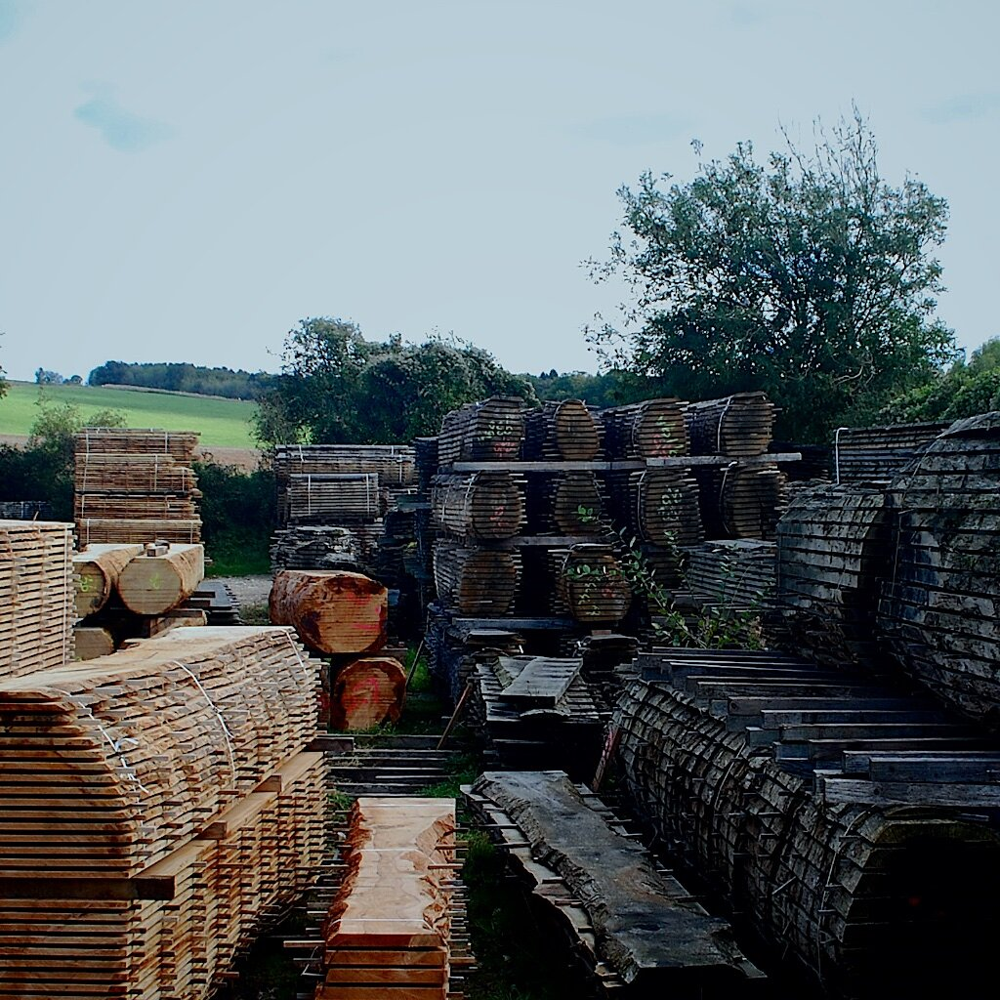

La madera
Cada tablero se selecciona cuidadosamente para una pieza en particular y viene con una etiqueta que indica su procedencia. Esto garantiza que toda la madera utilizada provenga de bosques gestionados y que la tala formara parte de un plan de gestión sostenible de bosques o de daños causados por tormentas.
Cada especie tiene sus propias características particulares y una belleza individual. La selección de madera forma la base de los diseños de Sandy y esto se analiza durante el proceso de puesta en marcha para ayudarlo a comprender la mejor madera para sus necesidades tanto estética como funcionalmente. De esta manera, puede estar seguro de que está obteniendo la mejor madera para su pieza, al tiempo que sabe que se obtiene de forma sostenible, comprende su procedencia y que está contribuyendo a la reforestación del Reino Unido.

Cuidado Posterior
Todas las piezas que salen del taller están destinadas al uso y protegidas con un acabado adecuado a la madera y uso concreto de la pieza.
Para todos estos acabados se recomienda no dejar ningún derrame en remojo y para limpiar tus muebles, nada más que una toallita con agua tibia y jabón hará el truco.
No deje ninguno de los productos de madera (como tablas o cucharas) en remojo, ni los ponga en el lavavajillas, ya que esto puede manchar o deformar la pieza.